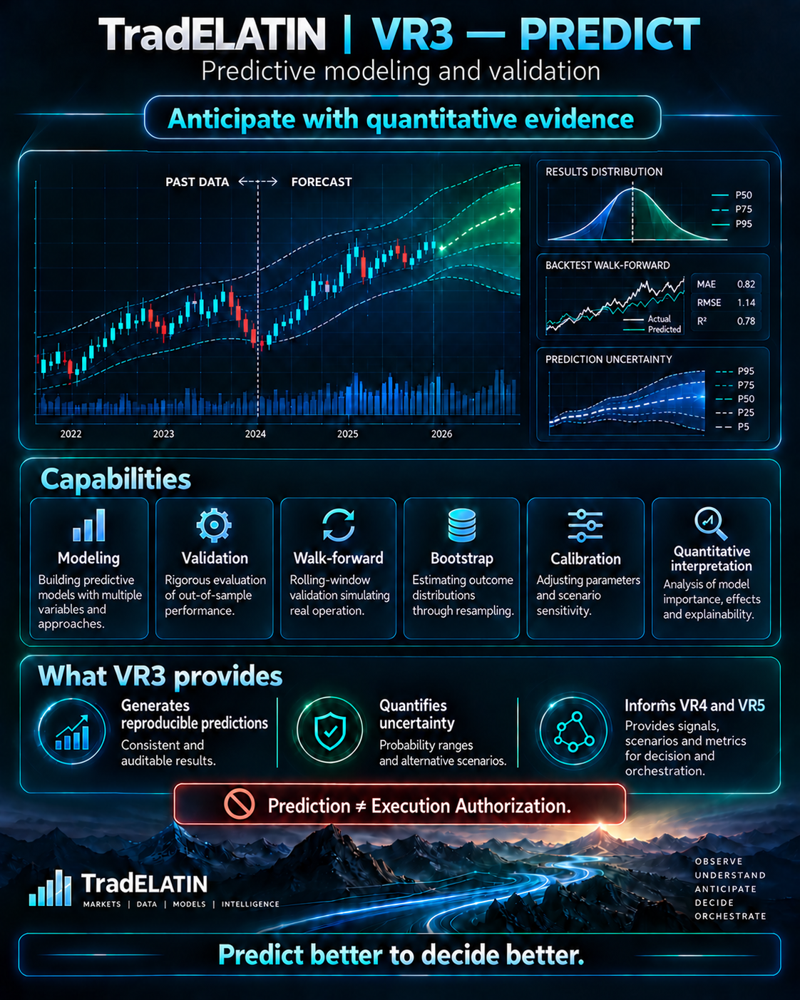

Feature construction
Inputs derived from VR1 observations and evaluated VR2 representations.
TradELATIN VR3 is the deterministic predictive component layer for modeling and evaluating observations from VR1 and admissible structural representations from VR2. Its responsibilities include validation, walk-forward evaluation, uncertainty, calibration, explainability and versioned predictive outputs. Component validation and production deployment are separate maturity claims.
Prediction ≠ Execution Authorization. VR3 does not execute orders, hold trading authority or take direct control of brokers.

Inputs remain versioned and responsibilities remain separated from execution.
Specific complex models have not been selected definitively.
Inputs derived from VR1 observations and evaluated VR2 representations.
Explicit outcome, timing, and evaluation definitions.
Classical models and transparent baselines.
Controlled comparison before greater complexity.
Simple neural networks only where evidence justifies evaluation.
Outputs expressed as distributions or probabilities where appropriate.
Reliability analysis and quantified uncertainty.
Traceable relationships between outputs and versioned inputs.
Consistent metrics and controlled comparisons.
Evaluation across market and structural states.
Detection of degradation and distribution shifts.
Probabilities, horizons, calibration, uncertainty, explainability, model comparison, and walk-forward performance.
Feature construction, model training, inference, calibration, metrics, uncertainty estimation, leakage controls, and versioned outputs.
Versioned interfaces connecting VR1 and VR2 inputs with VR3 models and exposing supervised predictive outputs for controlled VR4 evaluation.
Fixtures, historical replay, synthetic scenarios, regime shifts, controlled perturbations, out-of-sample evaluation and robustness experiments live within Processing / Integration.
VR3 may consume VR1 and evaluated VR2 outputs. VR4 consumption requires separate contracts and controls.
VR3 is described at predictive-component scope, with deterministic processing and validation responsibilities. Release-specific validation reports must accompany claims about particular models. This website does not establish production availability or live predictive performance.